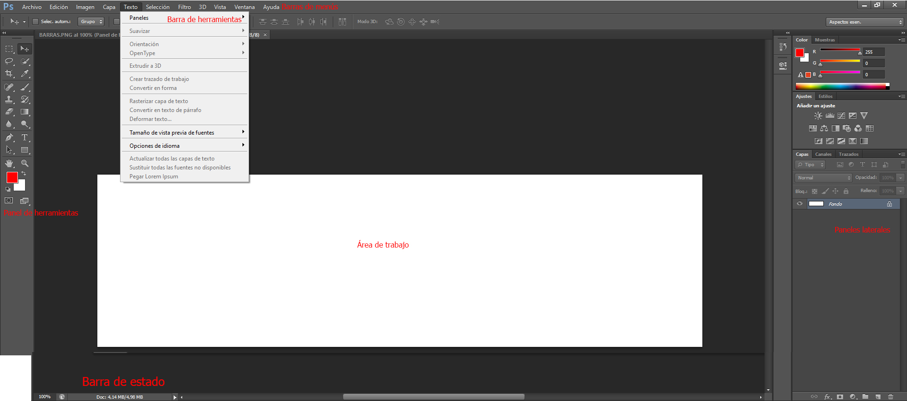

¿Qué es Photoshop y para qué sirve en Marketing?
Adobe Photoshop es el programa de edición de imágenes digitales más usado en el mundo. Fue creado en 1988 y desde entonces es la herramienta estándar en diseño gráfico, publicidad, fotografía y marketing.
En el área de Marketing, Photoshop se usa para crear y editar casi todo el material visual que ves a diario:
- Publicaciones y stories para redes sociales (Instagram, Facebook)
- Banners y anuncios para sitios web
- Flyers y afiches para imprimir o compartir digitalmente
- Fotografías de productos retocadas para tiendas online (e-commerce)
- Portadas de catálogos, revistas y materiales promocionales
- Tarjetas de presentación y papelería corporativa
La próxima vez que veas una publicidad — en Instagram, en la calle, en un supermercado — preguntate: ¿qué imágenes habrá tenido que combinar o retocar alguien para que quede así? Eso es exactamente lo que vas a aprender a hacer.
Conceptos esenciales antes de empezar
Un píxel (abreviado "px") es el punto más pequeño de una imagen digital. Si acercás mucho una foto en la pantalla, vas a ver que se divide en cuadraditos de colores: eso son los píxeles. Una imagen está formada por miles o millones de píxeles.
La resolución indica cuántos píxeles hay en cada pulgada de una imagen (se mide en DPI o PPP). 72 dpi es suficiente para pantalla (web, redes sociales). 300 dpi es lo mínimo necesario para imprimir con calidad. Una imagen de 72 dpi se ve bien en pantalla pero sale borrosa si la imprimís.
Photoshop trabaja con imágenes rasterizadas (hechas de píxeles). Si las agrandás mucho, pierden calidad y se pixelan. Los programas vectoriales (como CorelDRAW, que verán después) usan matemática y se pueden agrandar sin perder calidad.
RGB (Rojo, Verde, Azul) es el modo para pantalla — web, redes sociales. CMYK (Cian, Magenta, Amarillo, Negro) es el modo para imprenta. Siempre crear el documento en el modo correcto según su destino.
La interfaz de Photoshop CS6
Cuando abrís Photoshop CS6, la pantalla está dividida en zonas. Conocerlas desde el principio te ahorra mucho tiempo:

Cómo moverse por el documento
- Zoom in/out: Ctrl + + para acercar, Ctrl + - para alejar
- Ver todo el documento: Ctrl + 0 (cero) — ajusta la vista a la pantalla
- Mover el canvas: mantener presionada la Barra espaciadora y arrastrar con el mouse
- Zoom al 100%: Ctrl + 1 — para ver el tamaño real en pantalla
Si te perdés dentro del documento o no ves nada, apretá Ctrl + 0. Eso te devuelve la vista completa del documento. Es el "reset" de la vista.
Crear, abrir y guardar documentos
Crear un documento nuevo
Ir a Archivo → Nuevo (o Ctrl + N). Aparece una ventana donde configurás:
- Nombre: poné el nombre del archivo desde acá, así no te olvidás
- Ancho y Alto: las dimensiones del documento. Podés elegir píxeles, cm, mm, etc.
- Resolución: 72 ppp para pantalla / web; 300 ppp para imprimir
- Modo de color: RGB Color para pantalla; CMYK para imprenta
- Contenido del fondo: Blanco (el más común), Transparente o Color de fondo
Instagram post: 1080×1080 px · Story: 1080×1920 px · Banner web: 728×90 px · Flyer A5 impresión: 1748×2480 px a 300 ppp · Tarjeta personal: 1063×591 px a 300 ppp
Formatos para guardar
Guarda todo: capas, efectos, textos editables. Es el archivo que siempre debés mantener. Solo lo puede abrir Photoshop. Usá Ctrl + S para guardar o Ctrl + Shift + S para "Guardar como".
Aplana todas las capas en una sola imagen. Tiene compresión que reduce el tamaño pero puede perder algo de calidad. Ideal para web y redes sociales. Ir a Archivo → Guardar como → JPG.
Como el JPG pero soporta fondos transparentes. Ideal para logos que se van a poner sobre otros fondos. Tamaño de archivo un poco mayor que JPG.
Siempre guardá primero como PSD (tu archivo de trabajo) y luego exportá como JPG o PNG para compartir. Nunca trabajés solo con JPG — si lo guardás encima, perdés las capas para siempre.
Herramientas de pintura y color
El selector de color
En la parte inferior del panel de herramientas hay dos cuadrados superpuestos: el de adelante es el color de primer plano (el que usa el pincel) y el de atrás es el color de fondo. Hacé clic en cualquiera de los dos para abrir el selector de color.
En el selector podés ingresar colores de tres formas:
- Código HEX: el símbolo # seguido de 6 caracteres. Ejemplo: #FF0000 es rojo puro. Las marcas tienen sus colores definidos en HEX.
- Valores RGB: tres números del 0 al 255 (R, G, B). El blanco es 255,255,255 y el negro es 0,0,0.
- Visualmente: hacer clic en el espectro de color y ajustar la luminosidad en la barra lateral.
Presionando D restaurás los colores por defecto (primer plano negro, fondo blanco). Presionando X intercambiás el color de primer plano con el de fondo.
Herramienta Pincel (B)
La herramienta más básica. Pintá sobre el canvas con el color de primer plano. En la barra de opciones podés controlar:
- Tamaño: usá las teclas [ para achicar y ] para agrandar el pincel
- Dureza: 100% = borde definido; 0% = borde difuminado (suave)
- Opacidad: qué tan transparente es el trazo. 100% = opaco, 50% = semitransparente
- Flujo: qué tan rápido se carga el color al arrastrar
Herramienta Degradado (G)
Crea una transición suave entre dos o más colores. En CS6, hay varios tipos:
- Lineal: el degradado va en línea recta. Mantené Shift para que sea exactamente horizontal, vertical o a 45°
- Radial: el degradado sale del centro hacia afuera en forma de círculo
- Ángulo, Reflejo, Rombo: formas más complejas
Para usar el degradado: elegís los dos colores (primer plano y fondo), seleccionás el tipo, y arrastrás sobre el canvas.
Herramienta Cubo de Pintura / Relleno (G)
Rellena un área con el color de primer plano. Si hay una selección activa, rellena solo esa área. Si no hay selección, rellena toda la capa o el área contigua del mismo color (según la tolerancia configurada).
También podés rellenar con Alt + Supr (rellena con color de primer plano) o Ctrl + Supr (rellena con color de fondo).
Herramienta Cuentagotas (I)
Hace clic en cualquier parte de la imagen para "tomar" ese color y convertirlo en tu color de primer plano. Muy útil para trabajar con los colores exactos de una imagen o marca.
Tip: mientras usás el Pincel, podés activar el cuentagotas momentáneamente manteniendo presionada la tecla Alt.
Deshacer y el panel Historial
Ctrl + Z deshace el último paso. Pero en Photoshop CS6 solo deshace un paso. Para deshacer varios pasos, usá Ctrl + Alt + Z repetidamente, o abrí el panel Ventana → Historial y hacé clic en el paso al que querés volver.
Atajos de teclado de esta clase
Algunos atajos útiles:
| Atajo | Qué hace | Cuándo usarlo |
|---|---|---|
| Ctrl+N | Nuevo documento | Al iniciar un proyecto |
| Ctrl+O | Abrir archivo | Para abrir una imagen existente |
| Ctrl+S | Guardar | ¡Frecuentemente! Cada 5 minutos mínimo |
| Ctrl+Shift+S | Guardar como | Para guardar con otro nombre o formato |
| Ctrl+Z | Deshacer (1 paso) | Cuando cometés un error |
| Ctrl+Alt+Z | Deshacer varios pasos | Para volver varios pasos atrás |
| Ctrl++ | Zoom in (acercar) | Para ver detalles |
| Ctrl+- | Zoom out (alejar) | Para ver el conjunto |
| Ctrl+0 | Ajustar a pantalla | Para ver todo el documento |
| B | Herramienta Pincel | Para pintar |
| G | Degradado / Relleno | Para rellenar áreas o crear degradados |
| I | Cuentagotas | Para tomar un color de la imagen |
| D | Colores por defecto | Restaura negro y blanco |
| X | Intercambiar colores | Cambia primer plano por fondo |
| [ / ] | Achicar / Agrandar pincel | Mientras usás el pincel |
| Espacio + arrastrar | Mover el canvas | Para navegar por el documento |
| Alt+Supr | Rellenar con color primer plano | Relleno rápido |
Ejercicios de la clase
Paleta de colores de una marca conocida
Vas a recrear la paleta de colores de una marca conocida (Coca-Cola, Nike, McDonald's o la que elijas) usando Photoshop.
Abrí Photoshop. Archivo → Nuevo (Ctrl+N). Configurá: 800×400 px, 72 ppp, RGB, fondo blanco.
Con la herramienta Selección Rectangular (M), dibujá una franja vertical que ocupe 1/5 del ancho. Luego hacé clic en el color de primer plano e ingresá el código HEX del primer color de tu marca. Rellená la selección con Alt+Supr. Deseleccioná con Ctrl+D.
Repetí para los 4 colores restantes, creando 5 franjas en total.
Guardá como PSD: Ctrl+Shift+S → formato Photoshop. Nombre: tuapellido_paleta.psd
Exportá como JPG: Archivo → Guardar como → JPG. Nombre: tuapellido_paleta.jpg
Coca-Cola: #F40009 (rojo), #000000 (negro), #FFFFFF (blanco) · Nike: #000000, #FFFFFF, #FF6600 · McDonald's: #FFC72C (amarillo), #DA291C (rojo), #27251F (negro)
Fondo para tu primera publicación de Instagram
Vas a diseñar el fondo de una publicación cuadrada de Instagram para una marca inventada por vos. Pensá en qué producto o servicio ofrecería, y elegí colores que la representen.
Archivo → Nuevo (Ctrl+N): 1080×1080 px, 72 ppp, RGB, fondo blanco. Poné el nombre de tu marca como nombre del archivo.
Elegí 2 colores para tu marca. Configuralos como color de primer plano y fondo. Seleccioná la herramienta Degradado (G) y elegí el tipo Lineal en la barra de opciones.
Arrastrá desde una esquina a la esquina opuesta. Si mantenés Shift mientras arrastrás, el degradado va exactamente horizontal o vertical.
Seleccioná el Pincel (B). Elegí una punta suave (dureza 0%), tamaño grande (300–500 px), opacidad 20–30%. Pintá manchas sutiles en las esquinas con un tercer color de acento.
Experimentá cambiando el Modo del pincel en la barra de opciones a "Superponer" o "Multiplicar" — observá cómo cambia el efecto.
Guardá como PSD: tuapellido_instagram_fondo.psd
Subí a Google Classroom: tuapellido_paleta.jpg + tuapellido_instagram_fondo.psd
✅ Lo que aprendiste hoy
- Para qué se usa Photoshop en Marketing y Publicidad
- Qué es un píxel, la resolución y la diferencia entre RGB y CMYK
- Todas las zonas de la interfaz de Photoshop CS6
- Cómo crear, configurar y guardar documentos (PSD, JPG, PNG)
- Herramientas de pintura: Pincel, Degradado, Relleno y Cuentagotas
- Atajos esenciales para trabajar más rápido